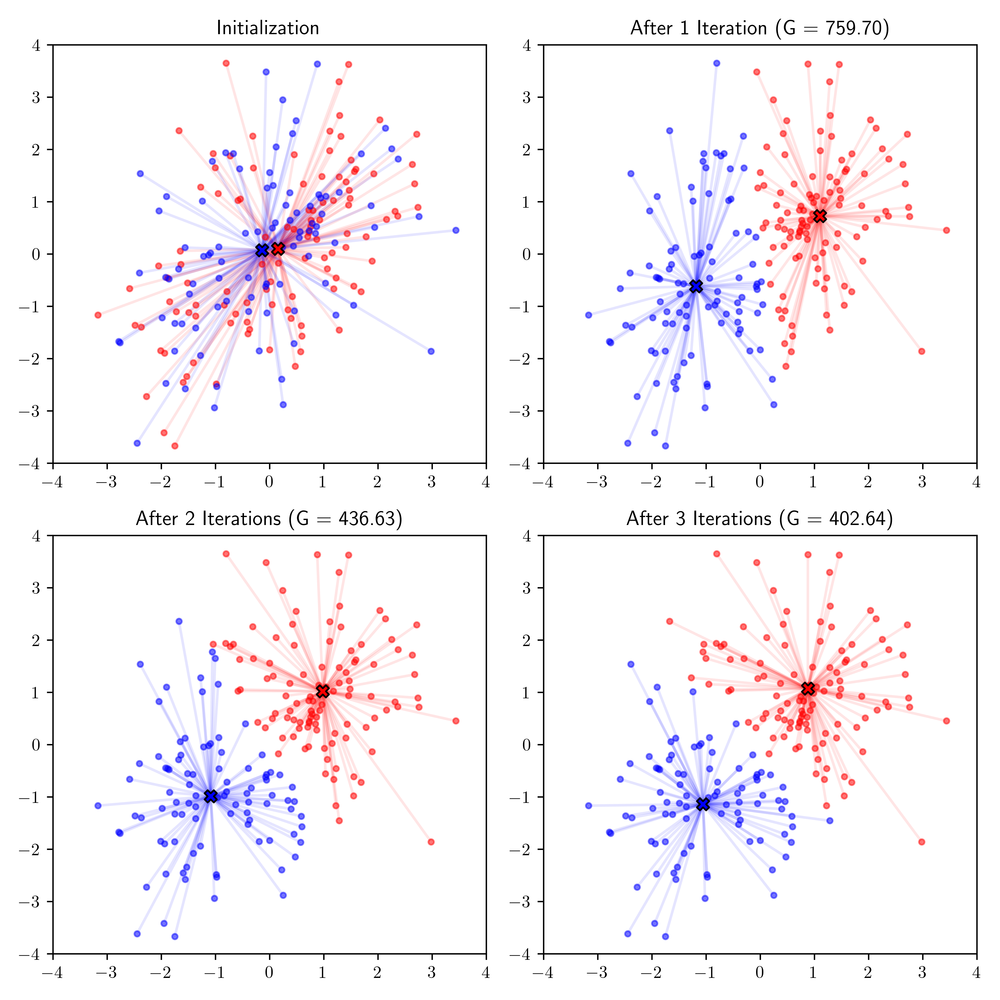

\(\newcommand{\bmu}{\boldsymbol{\mu}}\) \(\newcommand{\bSigma}{\boldsymbol{\Sigma}}\) \(\newcommand{\bfbeta}{\boldsymbol{\beta}}\) \(\newcommand{\bflambda}{\boldsymbol{\lambda}}\) \(\newcommand{\bgamma}{\boldsymbol{\gamma}}\) \(\newcommand{\bsigma}{{\boldsymbol{\sigma}}}\) \(\newcommand{\bpi}{\boldsymbol{\pi}}\) \(\newcommand{\btheta}{{\boldsymbol{\theta}}}\) \(\newcommand{\bphi}{\boldsymbol{\phi}}\) \(\newcommand{\balpha}{\boldsymbol{\alpha}}\) \(\newcommand{\blambda}{\boldsymbol{\lambda}}\) \(\renewcommand{\P}{\mathbb{P}}\) \(\newcommand{\E}{\mathbb{E}}\) \(\newcommand{\indep}{\perp\!\!\!\perp} \newcommand{\bx}{\mathbf{x}}\) \(\newcommand{\bp}{\mathbf{p}}\) \(\renewcommand{\bx}{\mathbf{x}}\) \(\newcommand{\bX}{\mathbf{X}}\) \(\newcommand{\by}{\mathbf{y}}\) \(\newcommand{\bY}{\mathbf{Y}}\) \(\newcommand{\bz}{\mathbf{z}}\) \(\newcommand{\bZ}{\mathbf{Z}}\) \(\newcommand{\bw}{\mathbf{w}}\) \(\newcommand{\bW}{\mathbf{W}}\) \(\newcommand{\bv}{\mathbf{v}}\) \(\newcommand{\bV}{\mathbf{V}}\) \(\newcommand{\bfg}{\mathbf{g}}\) \(\newcommand{\bfh}{\mathbf{h}}\) \(\newcommand{\horz}{\rule[.5ex]{2.5ex}{0.5pt}}\) \(\renewcommand{\S}{\mathcal{S}}\) \(\newcommand{\X}{\mathcal{X}}\) \(\newcommand{\var}{\mathrm{Var}}\) \(\newcommand{\pa}{\mathrm{pa}}\) \(\newcommand{\Z}{\mathcal{Z}}\) \(\newcommand{\bh}{\mathbf{h}}\) \(\newcommand{\bb}{\mathbf{b}}\) \(\newcommand{\bc}{\mathbf{c}}\) \(\newcommand{\cE}{\mathcal{E}}\) \(\newcommand{\cP}{\mathcal{P}}\) \(\newcommand{\bbeta}{\boldsymbol{\beta}}\) \(\newcommand{\bLambda}{\boldsymbol{\Lambda}}\) \(\newcommand{\cov}{\mathrm{Cov}}\) \(\newcommand{\bfk}{\mathbf{k}}\) \(\newcommand{\idx}[1]{}\) \(\newcommand{\xdi}{}\)
1.3. Clustering: an objective, an algorithm and a guarantee#
Consider the following fundamental problem in data science.
The input: We are given \(n\) vectors \(\mathbf{x}_1,\ldots,\mathbf{x}_n\) in \(\mathbb{R}^d\).
Our goal is to find a good clustering\(\idx{clustering}\xdi\): loosely speaking, we want to partition these data points into \(k\) disjoint subsets – or clusters – with small pairwise distances within clusters and large pairwise distances across clusters. To make this rather vague problem more precise, we consider a specific objective function known as the \(k\)-means objective. Our approach here will be typical of how one might approach a mathematical data science problem. We will first formulate the problem as an optimization problem, then derive an algorithm to solve it, and finally provide some rigorous guarantees about the output.
Figure: Data points forming three clusters (Source)
{kind=link}

\(\bowtie\)
The output: But first, we need to define precisely what we are trying to extract from the data. What is the mathematical structure of the solution sought? Fix a number of clusters \(k\). Formally, we define a clustering as a partition.
DEFINITION (Partition) \(\idx{partition}\xdi\) A partition of \([n] = \{1,\ldots,n\}\) of size \(k\) is a collection of non-empty subsets \(C_1,\ldots,C_k \subseteq [n]\) that:
are pairwise disjoint, i.e., \(C_i \cap C_j = \emptyset\), \(\forall i \neq j\)
cover all of \([n]\), i.e., \(\cup_{i=1}^k C_i = [n]\).
\(\natural\)
EXAMPLE: Suppose we are given \(8\) data points in \(\mathbb{R}^2\) as follows:
So here \(n=8\) and \(d = 2\). Assume we look for \(k = 3\) clusters. Then a valid clustering would be for instance:
which corresponds to assigning data points \(\mathbf{x}_1, \mathbf{x}_4, \mathbf{x}_6, \mathbf{x}_8\) to the first cluster, data points \(\mathbf{x}_2, \mathbf{x}_3, \mathbf{x}_7\) to the second cluster and data point \(\mathbf{x}_5\) to the third cluster. Note in particular that the sets \(C_1, C_2, C_3\) satisfy the conditions of a partition, i.e., they are disjoint and cover all of \([8] = \{1,2,\ldots,8\}\). Or put differently, each data point is assigned to one and exactly one cluster. \(\lhd\)
We number the clusters \(C_1,\ldots,C_k\) for notational convenience, but their order is meaningless. Two partitions are the same if they are the same family of subsets. E.g., in the previous example, \(C_1 = \{1, 4, 6, 8\}, C_2 = \{2, 3, 7\}, C_3 = \{5\}\) and \(C_1 = \{5\}, C_2 = \{1, 4, 6, 8\}, C_3 = \{2, 3, 7\}\) are equivalent clusterings.
1.3.1. The k-means objective#
Under the \(k\)-means objective\(\idx{k-means objective}\xdi\), the “cost” of \(C_1,\ldots,C_k\) is defined as
Here \(\boldsymbol{\mu}_i \in \mathbb{R}^d\) is the representative – or center – of cluster \(C_i\). Note that \(\boldsymbol{\mu}_i\) need not be one of the \(\mathbf{x}_j\)’s.
Our goal is to find a partition \(C_1,\ldots,C_k\) that minimizes \(\mathcal{G}(C_1,\ldots,C_k)\), i.e., solves the problem
over all partitions of \([n]\) of size \(k\). This is a finite optimization problem, as there are only a finite number of such partitions. Note, however, that the objective function itself is an optimization problem over \(\mathbb{R}^d \times \cdots \times \mathbb{R}^{d}\), that is, \(k\) copies of \(\mathbb{R}^d\).
To quote Wikipedia:
In centroid-based clustering, clusters are represented by a central vector, which may not necessarily be a member of the data set. When the number of clusters is fixed to k, k-means clustering gives a formal definition as an optimization problem: find the k cluster centers and assign the objects to the nearest cluster center, such that the squared distances from the cluster are minimized.
KNOWLEDGE CHECK: Is it possible for a global solution of the \(k\)-means clustering problem to contain an empty cluster? \(\checkmark\)
In general, the problem is NP-hard\(\idx{NP-hardness}\xdi\), that is, roughly speaking no “fast” algorithm is expected to exist to solve it. Lloyd’s algorithm (also referred to as the \(k\)-means algorithm) is a popular heuristic. It is based on the idea that the following two sub-problems are easy to solve:
finding the optimal representatives for a fixed partition;
finding the optimal partition for a fixed set of representatives.
One then alternates between the two (perhaps until progress falls below a tolerance). This is reasonable since our goal, as we pointed out above, is to solve the minimization problem
where \(C_1,\ldots,C_k\) ranges over all partitions of \([n]\) of size \(k\). Fixing partition \(C_1,\ldots,C_k\) and miniminizing over \(\boldsymbol{\mu}_1,\ldots,\boldsymbol{\mu}_k \in \mathbb{R}^d\) corresponds to solving the first problem above, while fixing \(\boldsymbol{\mu}_1,\ldots,\boldsymbol{\mu}_k \in \mathbb{R}^d\) and miniminizing over partitions \(C_1,\ldots,C_k\) corresponds to solving the second problem.
CHAT & LEARN Ask your favorite AI chatbot about the differences between \(k\)-means, \(k\)-medians, and \(k\)-medoids clustering. \(\ddagger\)
Some useful optimization results To analyze the Lloyd’s algorithm, we will rely on a few basic observations.
Minimizing a quadratic function: To elaborate on the first step above, we review an elementary fact about quadratic functions.Consider the function
When \(a > 0\), \(q\) has a unique minimum.
LEMMA (Minimum of a Quadratic Function) \(\idx{minimum of a quadratic function}\xdi\) Let \(q(x) = a x^2 + b x + c\) where \(a > 0\) and \(x \in \mathbb{R}\). The unique global minimum of \(q\) is attained at
\(\flat\)
Proof: By the First-Order Necessary Optimality Condition, a global minimizer of \(q\) (which is necessarily a local minimizer) satisfies the condition
whose unique solution is
To see that \(x^*\) is indeed a global minimizer, we re-write \(q\) as
Clearly, any other \(x\) gives a higher value for \(q\). The step on the second line above is called Completing the Square. \(\square\)
Optimizing an additively separable function: Functions that can be written as the sum of disjoint sets of coordinates arise commonly in optimization and have convenient “separability” properties.
For vectors \(\mathbf{x}_i \in \mathbb{R}^{d_i}\), \(i \in [\ell]\), with \(\sum_{i=1}^\ell = d_i\), their concatenation is denoted as \((\mathbf{x}_1, \ldots, \mathbf{x}_\ell) \in \mathbb{R}^d\). That is the vector obtained by concatenating the coordinates of \(\mathbf{x}_1, \ldots, \mathbf{x}_\ell\) into a single vector. A different way to see this is that \((\mathbf{x}_1, \ldots, \mathbf{x}_\ell)\) is a block vector with blocks \(\mathbf{x}_1, \ldots, \mathbf{x}_\ell\). For example, if \(\mathbf{x}_1 = (1, 2)\) and \(\mathbf{x}_2 = (-1, -3, -5)\), then \((\mathbf{x}_1,\mathbf{x}_2) = (1, 2, -1, -3, -5)\).
LEMMA (Optimizing a Separable Function) \(\idx{optimizing a separable function lemma}\xdi\) Assume that \(\mathbf{z} \in \mathbb{R}^d\) can be broken up into subvectors \(\mathbf{x}_i \in \mathbb{R}^{d_i}\), \(i \in [\ell]\), with \(\sum_{i=1}^\ell = d_i\) as follows \(\mathbf{z} = (\mathbf{x}_1, \ldots, \mathbf{x}_\ell)\). Suppose that the real-valued function \(h : \mathbb{R}^d \to \mathbb{R}\) can be written in the additively separable form
for a collection of functions \(f_i : \mathbb{R}^{d_i} \to \mathbb{R}\), \(i \in [\ell]\). If, for each \(i \in [\ell]\), \(\mathbf{x}_i^*\) is a global minimum of \(f_i\), then \(\mathbf{z}^* = (\mathbf{x}_1^*, \ldots, \mathbf{x}_\ell^*)\) is a global minimum of \(h\). \(\flat\)
Proof idea: Each term in the sum defining \(h\) depends on a separate set of coordinates and therefore is unaffected by the choices made in other terms.
Proof: Let \(\mathbf{z} = (\mathbf{x}_1, \ldots, \mathbf{x}_\ell)\). Since \(\mathbf{x}_i^*\) is a global minimum of \(f_i\), it holds that \(f_i(\mathbf{x}_i^*) \leq f_i(\mathbf{x}_i)\), for all \(i\). Hence,
Since \(\mathbf{z}\) is arbitrary, we have proved the claim. \(\square\)
Composing with a non-decreasing function: Recall that a real-valued function \(f\) of a single variable is non-decreasing if
LEMMA (Composing with a Non-Decreasing Function) \(\idx{composing with a non-decreasing function lemma}\xdi\) Let \(f : \mathbb{R} \to \mathbb{R}\) be non-decreasing, let \(g : \mathbb{R}^d \to \mathbb{R}\), and define \(h(\mathbf{x}) = f(g(\mathbf{x}))\). If \(\mathbf{x}^*\) is a global minimum of \(g\), then it is also a global minimum of \(h\). \(\flat\)
Proof idea: This just follows from applying the definitions.
Proof: Let \(\mathbf{x} \in \mathbb{R}^d\). Because \(\mathbf{x}^*\) is a global minimum of \(g\), \(g(\mathbf{x}^*) \leq g(\mathbf{x})\). Further, since \(f\) is non-decreasing,
Since \(\mathbf{x}\) is arbitrary, we have proved the claim. \(\square\)
Sub-problem 1: finding the optimal representatives We denote by \(|C_i|\) the number of elements in \(C_i\).
EXAMPLE: (continued) Continuing the example above, the sizes of the clusters are respectively \(|C_1| = 4, |C_2| = 3, |C_3| = 1\). Note in particulat that \(|C_1| + |C_2| + |C_3| = 8 = n\), as follows from the fact that \(C_1, C_2, C_3\) is a partition. \(\lhd\)
LEMMA (Optimal Representatives) \(\idx{optimal representatives lemma}\xdi\) Fix a partition \(C_1,\ldots,C_k\). The optimal representatives under the objective
are the centroids\(\idx{centroid}\xdi\)
\(\flat\)
Proof idea: The objective \(G\) can be written as a sum, where each term is a quadratic function in one component of one of the \(\boldsymbol{\mu}_i\)’s. Each of these terms is minimized by the average of the corresponding components of the \(\mathbf{x}_j\)’s belonging \(C_i\).
EXAMPLE: (continued) Continuing with the previous example, we compute the optimal representatives for the fixed partition \(C_1, C_2, C_3\) above. We get
\(\lhd\)
Proof: (Optimal Representatives) Using the notation \(\mathbf{x}_j = (x_{j1},\ldots,x_{jd})^T\) and similarly for \(\boldsymbol{\mu}_i\), note that we can expand the \(k\)-means objective as
The expression in square brackets is a quadratic function in \(\mu_{im}\)
Therefore, by the formula for the Minimum of a Quadratic Function, is minimized at
Since each term \(q_{im}(\mu_{im})\) in the sum over \(i, m\) making up the objective function \(G\) is minimized at \(\boldsymbol{\mu}_1^*,\ldots, \boldsymbol{\mu}_k^*\), so is \(G\) by Optimizing a Separable Function. \(\square\)
That the squared norm decomposes into a sum over the coordinates (which the norm itself doesn’t because of the square root) is one reason why it is convenient to use here, as was perhaps apparent in this last proof.
Sub-problem 2: finding the optimal partition Given \(n\) vectors \(\mathbf{x}_1,\ldots,\mathbf{x}_n\) in \(\mathbb{R}^d\) and a partition \(C_1, \ldots, C_k \subseteq [n]\), it will be useful to have some notation for the corresponding cluster assignment: we define \(c(j) = i\) if \(j \in C_i\).
EXAMPLE: (continued) Continuing the example above, the clusters \(C_1 = \{1, 4, 6, 8\}, C_2 = \{2, 3, 7\}, C_3 = \{5\}\) correspond to the assignment
\(\lhd\)
LEMMA (Optimal Clustering) \(\idx{optimal clustering lemma}\xdi\) Fix the representatives \(\boldsymbol{\mu}_1,\ldots,\boldsymbol{\mu}_k\). An optimal partition under the objective
is obtained as follows. For each \(j\), find the \(\boldsymbol{\mu}_i\) that minimizes \(\|\mathbf{x}_j - \boldsymbol{\mu}_i\|\) (picking one arbitrarily in the case of ties) and assign \(\mathbf{x}_j\) to \(C_i\) (i.e., add \(j\) to \(C_i\)). \(\flat\)
Proof: If \(c\) is the cluster assignment associated to \(C_1,\ldots,C_k\), then we can re-write the objective as
By definition, when the \(\boldsymbol{\mu}_i\)’s are fixed, each term in the sum on the right-hand side is minimized separately by the assignment in the statement. Hence so is the sum itself by the Optimizing a Separable Function Lemma. Note that we used the fact that the square root (and the square) is non-decreasing to conclude that minimizing \(\|\mathbf{x}_j - \boldsymbol{\mu}_i\|^2\) or its square root \(\|\mathbf{x}_j - \boldsymbol{\mu}_i\|\) are equivalent by the Composing with a Non-Decreasing Function Lemma. \(\square\)
EXAMPLE: (continued) Continuing the example above, suppose that we choose representatives
Then we find the cluster assignment of \(\mathbf{x}_1\) by computing its squared distance to each representative:
The minimum is achieved for \(\boldsymbol{\mu}_2\) so we assign \(\mathbf{x}_1\) to \(C_2\), i.e., \(1 \in C_2\) and \(c(1) = 2\). \(\lhd\)
1.3.2. Lloyd’s algorithm and its analysis#
We are now ready to describe Lloyd’s algorithm\(\idx{Lloyd's algorithm}\xdi\). We start from a random assignment of clusters. (An alternative initialization strategy is to choose \(k\) representatives at random among the data points.) We then alternate between the optimal choices in the lemmas. In lieu of pseudo-code, we write out the algorithm in Python. We will use this approach throughout the book.
The input X is assumed to be a collection of \(n\) vectors \(\mathbf{x}_1, \ldots, \mathbf{x}_n \in \mathbb{R}^d\) stacked into a matrix, with one row for each data point. The other input, k, is the desired number of clusters. There is an optional input maxiter for the maximum number of iterations, which is set to \(5\) by default.
We first define separate functions for the two main steps. To find the minimum of an array, we use the function numpy.argmin. We also use numpy.linalg.norm to compute the Euclidean distance.
def opt_reps(X, k, assign):
(n, d) = X.shape
reps = np.zeros((k, d))
for i in range(k):
in_i = [j for j in range(n) if assign[j] == i]
reps[i,:] = np.sum(X[in_i,:],axis=0) / len(in_i)
return reps
def opt_clust(X, k, reps):
(n, d) = X.shape
dist = np.zeros(n)
assign = np.zeros(n, dtype=int)
for j in range(n):
dist_to_i = np.array([LA.norm(X[j,:] - reps[i,:]) for i in range(k)])
assign[j] = np.argmin(dist_to_i)
dist[j] = dist_to_i[assign[j]]
G = np.sum(dist ** 2)
print(G)
return assign
The main function follows. Below, rng.integers(0,k,n) is an array of n uniformly chosen integers between 0 and k-1 (inclusive). See random.Generator.integers for details. Recall that throughout, when defining a function that uses a random number generator (RNG), we initialize the RNG outside the function and pass the RNG to it. It allows us to maintain control over the random number generation process at a higher level and ensures consistent results across multiple runs.
def kmeans(rng, X, k, maxiter=5):
(n, d) = X.shape
assign = rng.integers(0,k,n)
reps = np.zeros((k, d), dtype=int)
for iter in range(maxiter):
reps = opt_reps(X, k, assign)
assign = opt_clust(X, k, reps)
return assign
NUMERICAL CORNER: We apply our implementation of \(k\)-means to the example above. We fix k to \(3\). Here the data matrix X is the following:
seed = 535
rng = np.random.default_rng(seed)
X = np.array([[1., 0.],[-2., 0.],[-2.,1.],[1.,-3.],
[-10.,10.],[2.,-2.],[-3.,1.],[3.,-1.]])
assign = kmeans(rng, X, 3)
162.7
74.8611111111111
9.083333333333334
9.083333333333334
9.083333333333334
We vizualize the output by coloring the points according to their cluster assignment.
plt.scatter(X[:,0], X[:,1], s=10, c=assign, cmap='brg')
plt.axis([-11,4,-4,11])
plt.show()
We can compute the final representatives (optimal for the final assignment) by using the subroutine opt_reps.
print(opt_reps(X, 3, assign))
[[ -2.33333333 0.66666667]
[ 1.75 -1.5 ]
[-10. 10. ]]
Each row is the center of the corresponding cluster. Note these match with the ones we previously computed. Indeed, the clustering is the same (although not necessarily in the same order).
TRY IT! Modify kmeans to take a tolerance tol as input and stop when the improvement in objective value G falls below the tolerance. (Open in Colab)
\(\unlhd\)

KNOWLEDGE CHECK: Suppose we have infinite computational resources and run Lloyd’s algorithm forever, do you think it will necessarily converge to a global minimum? If your answer is no, can you think of an alternative algorithm that is guaranteed to output a global minimum provided enough computational resources? \(\checkmark\)
Lloyd’s algorithm is only a heuristic. In particular, it is not guaranteed to find the global minimum of the \(k\)-means objective. However, it is guaranteed to improve the objective at every iteration, or more precisely, not to make it worse.
THEOREM (Convergence of \(k\)-means cost) \(\idx{convergence of k-means cost theorem}\xdi\) The sequence of objective function values produced by the \(k\)-means algorithm is non-increasing. \(\sharp\)
Proof idea: By the Optimal Representatives Lemma and the Optimal Clustering Lemma, each step does not increase the objective.
Proof: Let \(C_1',\ldots,C_k'\) be the current clusters, with representatives \(\boldsymbol{\mu}_1',\ldots,\boldsymbol{\mu}_k'\). After Step 1, the new representatives are \(\boldsymbol{\mu}_1'',\ldots,\boldsymbol{\mu}_k''\). By the Optimal Representatives Lemma, they satisfy
After Step 2, the new clusters are \(C_1'',\ldots,C_k''\). By the Optimal Clustering Lemma, they satisfy
Combining these two inequalities gives
as claimed. \(\square\)
The sequence of objective values is monotone and bounded from below by \(0\). Hence it converges. Note that the limit depends on the starting point.
CHAT & LEARN AI chatbots can serve as great personal tutors, especially when it comes to coding which they often excel at. In particular, they can provide additional information about the code in this book. Just copy-paste a piece of code and ask “What is this code doing?” Don’t hesitate to ask follow-up questions. Here is an example using ChatGPT.
Warning: As you probably know, AI chatbots can be wrong so assess what they tell you with a critical mind and/or double-check with other sources (e.g., package documentation). \(\ddagger\)
NUMERICAL CORNER: We will test our implementation of \(k\)-means on the penguins dataset introduced earlier in the chapter. We first extract the columns and combine them into a data matrix X. As we did previously, we also remove the rows with missing values.
Figure: Which penguin species? (Credit: Made with Midjourney)
\(\bowtie\)
data = pd.read_csv('penguins-measurements.csv')
data = data.dropna()
X = data[['bill_length_mm', 'bill_depth_mm',
'flipper_length_mm', 'body_mass_g']].to_numpy()
We visualize a two-dimensional slice of the data.
plt.scatter(X[:,1], X[:,3], s=5, c='k')
plt.xlabel('bill_depth_mm'), plt.ylabel('body_mass_g')
plt.show()
Observe that the features have quite different scales (tens versus thousands in the plot above). In such a case, it is common to standardize the data so that each feature has roughly the same scale. For each column of X, we subtract its empirical mean and divide by its empirical standard deviation.
mean = np.mean(X, axis=0)
std = np.std(X, axis=0)
X = (X - mean) / std
Now we run Lloyd’s algorithm with \(k=2\) clusters.
assign = kmeans(rng, X, 2)
1338.2046936914157
820.9361062178352
603.8787658966849
575.2587351391593
567.7837494880662
We vizualize the output as we did before, but this time coloring the data points by their cluster assignment.
plt.scatter(X[:,1], X[:,3], s=5, c=assign, cmap='brg')
plt.xlabel('bill_depth (standardized)'), plt.ylabel('body_mass (standardized)')
plt.show()
This clustering looks quite good. Nevertheless recall that:
in this plot we are looking at only two of the four variables while \(k\)-means uses all of them,
we are not guaranteed to find the best solution,
our objective function is somewhat arbitrary, and
it is not clear what the right choice of \(k\) is.
In fact, the original dataset contained the correct answer, as provided by biologists. Despite what the figure above may lead us to believe, there are in reality three separate species. So let us try with \(k=3\) clusters.
assign = kmeans(rng, X, 3)
1312.344945158482
577.1700837839458
428.50397345437966
392.2616692426171
383.3452894259011
The output does not seem quite right.
plt.scatter(X[:,1], X[:,3], s=5, c=assign, cmap='brg')
plt.xlabel('bill_depth (standardized)'), plt.ylabel('body_mass (standardized)')
plt.show()
But, remembering the warnings mentioned previously, let us look at a different two-dimensional slice.
plt.scatter(X[:,0], X[:,3], s=5, c=assign, cmap='brg')
plt.xlabel('bill_length (standardized)'), plt.ylabel('body_mass (standardized)')
plt.show()
Let us load up the truth and compare. We only keep those samples that were not removed because of missing values (see pandas.DataFrame.iloc).
data_truth = pd.read_csv('penguins-species.csv')
data_truth = data_truth.iloc[data.index]
data_truth.head()
| species | |
|---|---|
| 0 | Adelie |
| 1 | Adelie |
| 2 | Adelie |
| 4 | Adelie |
| 5 | Adelie |
The species are:
species = data_truth['species']
print(species.unique())
['Adelie' 'Chinstrap' 'Gentoo']
To plot the outcome, we color the species blue-green-red using a dictionary.
species2color_dict = {'Adelie': 'blue', 'Chinstrap': 'lime', 'Gentoo': 'red'}
truth = [species2color_dict[a] for a in species]
Finally, we can compare the output to the truth. The match is quite good – but certainly not perfect.
f, (ax1, ax2) = plt.subplots(1, 2, sharex=True, sharey=True, figsize=(6.5, 3))
ax1.scatter(X[:,0], X[:,3], s=5, c=truth)
ax1.set_title('truth')
ax2.scatter(X[:,0], X[:,3], s=5, c=assign, cmap='brg')
ax2.set_title('kmeans')
plt.show()
Determining the appropriate number of clusters is not a straighforward problem. To quote Wikipedia:
The correct choice of \(k\) is often ambiguous, with interpretations depending on the shape and scale of the distribution of points in a data set and the desired clustering resolution of the user. In addition, increasing \(k\) without penalty will always reduce the amount of error in the resulting clustering, to the extreme case of zero error if each data point is considered its own cluster (i.e., when \(k\) equals the number of data points, \(n\)). Intuitively then, the optimal choice of \(k\) will strike a balance between maximum compression of the data using a single cluster, and maximum accuracy by assigning each data point to its own cluster. If an appropriate value of \(k\) is not apparent from prior knowledge of the properties of the data set, it must be chosen somehow. There are several categories of methods for making this decision.
In practice, several heuristics are in use. Other approaches to clustering, e.g. DBSCAN and hierarchical clustering, do not require a number of clusters as input.
TRY IT! Run the analysis again, but this time without the standardization step. What do you observe? Is one feature more influential on the final output than the others? Why do you think that is? (Open in Colab)
\(\unlhd\)
1.3.3. Matrix form of k-means clustering#
In this section, we show that the \(k\)-means clustering objective can be written in matrix form. We start with some notation and definitions that will be useful throughout.
As we indicated before, for a collection of \(n\) data vectors \(\mathbf{x}_1, \ldots, \mathbf{x}_n\) in \(\mathbb{R}^d\), it is often convenient to stack them up into a matrix
We can do the same with cluster representatives. Given \(\boldsymbol{\mu}_1,\ldots,\boldsymbol{\mu}_k\) also in \(\mathbb{R}^d\), we form the matrix
Perhaps less obviously, cluster assignments can also be encoded in matrix form. Recall that, given a partition \(C_1,\ldots,C_k\) of \([n]\), we define \(c(j) = i\) if \(j \in C_i\). For \(j=1,\ldots,n\) and \(\ell=1,\ldots,k\), set \(Z_{j\ell} = 1\) if \(c(j) = \ell\) and \(0\) otherwise, and let \(Z\) be the \(n \times k\) matrix with entries \(Z = [Z_{j\ell}]_{j,\ell}\). That is, row \(j\) has exactly one entry with value \(1\), corresponding to the assigned cluster \(c(j)\) of data point \(\mathbf{x}_j\), and all other entries \(0\).
With this notation, the representative of the cluster assigned to data point \(\mathbf{x}_j\) is obtained through a matrix product
where we used that the \(j\)-th row of a matrix product is a linear combination of the rows of the second matrix, where the coefficients are the entries on the \(j\)-th row of the first one.
EXAMPLE: (continued) Continuing with our previous example, the clusters \( C_1 = \{1, 4, 6, 8\}, C_2 = \{2, 3, 7\}, C_3 = \{5\} \) are encoded as the matrix
Suppose again that the representatives are
The corresponding matrix \(U\) is then
Hence multiplying \(Z\) and \(U\) produces a matrix where each row is the representative of the assigned cluster of the corresponding data point
\(\lhd\)
Recall that the Frobenius norm of an \(n \times m\) matrix \(A \in \mathbb{R}^{n \times m}\) is defined as
Using the row notation, it can be written as the sum of the squared Euclidean norms of the rows
For two matrices \(A, B \in \mathbb{R}^{n \times m}\), the Frobenius norm of their difference \(\|A - B\|_F\) can be interpreted as a distance between \(A\) and \(B\), that is, a measure of how dissimilar they are.
Finally, we return to the \(k\)-means objective. Using the notation introduced in this section and the equivalent formula for the objective \(G\) derived the proof of the Optimal Clustering Lemma, we note that
where we used the definition of the Frobenius norm.
In other words, minimizing the \(k\)-means objective is equivalent to finding a matrix factorization of the form \(ZU\) that is a good fit to the data matrix \(X\) in Frobenius norm. This formulation expresses in a more compact form the idea of representing \(X\) as a combination of a small number of representatives. Matrix factorization will come back repeatedly in this course.
Self-assessment quiz (with help from Claude, Gemini, and ChatGPT)
1 Which of these is NOT a property of a valid partition \(C_1, \ldots, C_k\) in the context of \(k\)-means?
a) The subsets are pairwise disjoint
b) The subsets cover all data points
c) Each subset is non-empty
d) Each subset contains an equal number of points
2 In the \(k\)-means objective function, what does the variable \(\boldsymbol{\mu}_i\) represent?
a) The centroid of cluster \(i\)
b) The number of points in cluster \(i\)
c) The distance between clusters \(i\) and \(j\)
d) The assignment of point \(j\) to a cluster
3 The \(k\)-means objective function is a measure of what?
a) The total number of clusters.
b) The average distance between data points.
c) The sum of squared distances between each data point and its assigned cluster center.
d) The maximum distance between any two cluster centers.
4 What is a key property of the sequence of objective function values produced by the \(k\)-means algorithm?
a) It is strictly decreasing
b) It is non-increasing
c) It is strictly increasing
d) It alternates between two values
5 What is the interpretation of the matrix \(Z\) in the matrix formulation of \(k\)-means?
a) It represents the cluster centers.
b) It represents the distances between data points.
c) It encodes the cluster assignments of each data point.
d) It represents the covariance matrix of the data.
Answer for 1: d. Justification: “Formally, we define a clustering as a partition. A partition of \([n] = {1,\ldots,n}\) of size \(k\) is a collection of non-empty subsets \(C_1,\ldots,C_k \subseteq [n]\) that: are pairwise disjoint, i.e., \(C_i \cap C_j = \emptyset\), \(\forall i \neq j\); cover all of \([n]\), i.e., \(\cup_{i=1}^k C_i = [n]\).” No requirement for equal-sized subsets is mentioned.
Answer for 2: a. Justification: “Here \(\boldsymbol{\mu}_i \in \mathbb{R}^d\) is the representative – or center – of cluster \(C_i\).”
Answer for 3: c. Justification: The \(k\)-means objective is defined in the text as minimizing the sum of squared distances between data points and their assigned cluster centers.
Answer for 4: b. Justification: “The sequence of objective function values produced by the \(k\)-means algorithm is non-increasing.”
Answer for 5: c. Justification: The text defines \(Z\) as a matrix where “each row has exactly one entry with value 1, corresponding to the assigned cluster of data point.”